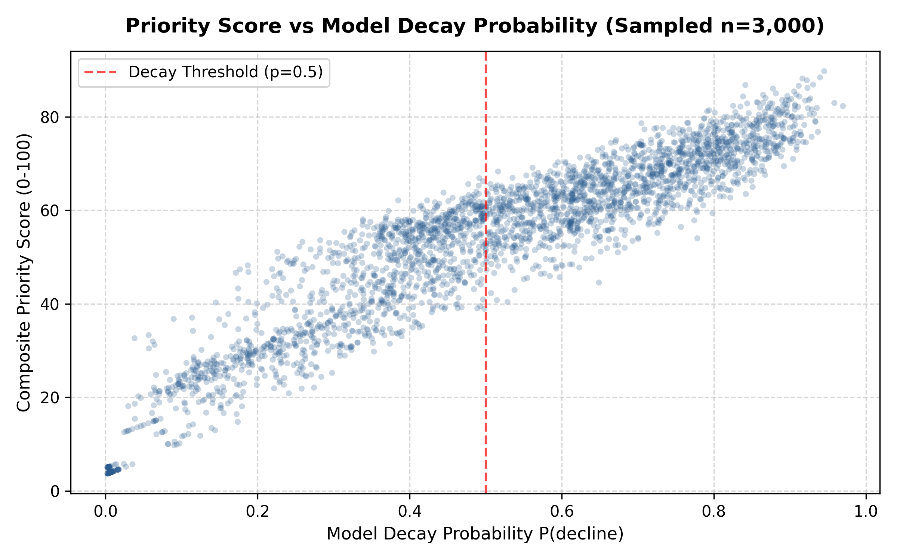
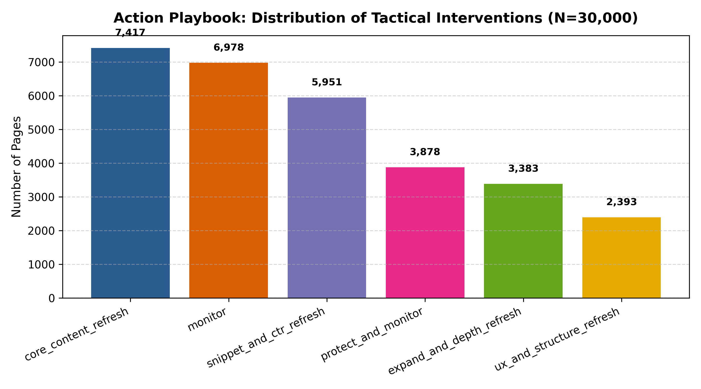
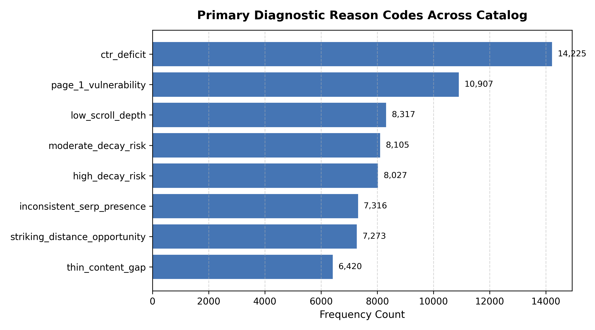

How can enterprise search marketing teams prioritize high-leverage content refreshes across catalogs exceeding 30,000 URLs without falling into high-volume evergreen traps or wasting human hours on ghost pages? Using a cross-client search intelligence dataset of 30,000 URLs across 32 enterprise domains, we developed and audited a gradient-boosted opportunity scoring system benchmarked against standard commercial heuristic rules. On held-out client domains evaluated under strict GroupShuffleSplit validation, our HistGradientBoostingClassifier achieved 90.0% Precision@10 and 80.0% Precision@50, substantially outperforming the rule baseline (Precision@10 of 20.0%, 4.5× lift over baseline; base decay rate 51.1%). Auditing split leakage revealed a 16.3-point overoptimistic AUC gap in naive random splits (AUC 0.783 down to 0.620 in grouped evaluation), demonstrating that cross-domain generalization requires strict domain-level isolation. We synthesize these validated decay risks into a 5-action operational playbook with human-in-the-loop safeguards and concrete retrain triggers, providing a defensible decision-support queue for editorial intervention.
In enterprise content management, high-volume catalogs suffer from severe triage fatigue. A typical content strategy team managing 10,000 to 50,000 published URLs can realistically refresh and audit only 15 to 25 articles per weekly sprint. When human editorial hours are heavily constrained, the cost of an incorrect recommendation is high: allocating $500–$800 in writer hours to rewrite an evergreen page that is merely fluctuating within normal noise, while neglecting a high-value Page 1 asset in rapid organic decay, leads to unrecoverable traffic loss.
Standard industry practices rely on commercial heuristic scoring formulas (e.g. sorting by raw trailing traffic drops or keyword volume). As established in our preliminary baseline audits, these naive rules suffer from the "volume trap": they systematically surface the largest, most stable evergreen hub pages as false positives, while ignoring striking-distance assets (positions 4 to 20) on the verge of falling off Google's Page 1.
This research evaluates whether machine learning models trained on 90-day multi-channel search telemetry can reliably rank URLs by historical decay risk on completely unseen client domains, outperforming standard heuristic baselines while establishing transparent operational boundaries.
This study was conducted on the FlyRank ML Internship dataset (Release: March 2026), comprising 30,000 anonymized URLs spanning 32 enterprise domains. The data integrates Google Search Console (GSC) organic visibility with Google Analytics 4 (GA4) behavioral telemetry.
The primary feature matrix is computed from trailing 90-day aggregate windows (*_90d), tracking organic impressions, clicks, sessions, average position, engagement rate, and scroll completion rates. The binary classification target is defined as:
Across the full 30,000-page catalog, the empirical base decay rate is 51.1% (15,335 declining pages vs 14,665 stable/improving pages). This base rate serves as our critical reference anchor: any model or rule scoring below 51.1% precision in its top ranks is worse than an unweighted coin flip.
To ensure strict publication safety and prevent future-window label contamination, all client identifiers, domain names, and search queries were cryptographically hashed. Furthermore, the following columns were permanently blacklisted from all feature pipelines:
trend_direction and trend_pct: The target labels derived from future 30-day performance comparisons.*_last_30d and *_prev_30d fields: Direct components of the target delta calculation.client_id and content_id: Excluded from feature sets to prevent models from memorizing domain-specific authority biases.provider_used and model_used: CMS operational metadata irrelevant to organic search demand.A central vulnerability in search intelligence modeling is domain leakage. In standard random train/test splits, pages from the same client domain are distributed across both training and test partitions. Because all pages on a domain share technical site architecture, backlink equity, and brand authority, random splits produce artificially inflated evaluation metrics that collapse when applied to a new website.
To simulate true production deployment to new customer domains, we enforced a strict GroupShuffleSplit(test_size=0.20, random_state=42) grouped on client_id:
We configured a 24-feature pipeline (18 numeric features scaled via StandardScaler and 6 categorical features encoded via OneHotEncoder) paired with a HistGradientBoostingClassifier (max depth 5, min samples leaf 25, balanced class weights). This model was benchmarked against the standard commercial heuristic rule:
Both the HistGradientBoostingClassifier and the baseline rule were evaluated on the identical held-out client test set (6,163 URLs, 7 unseen client domains, base decay rate 51.1%).
| Evaluation Metric | Rule Baseline | HistGradientBoosting (Ours) | Absolute Lift | Relative Gain |
|---|---|---|---|---|
| Precision @ 10 | 0.200 (2/10) | 0.900 (9/10) | +0.700 | 4.50× (350% lift) |
| Precision @ 20 | 0.350 (7/20) | 0.900 (18/20) | +0.550 | 2.57× (157% lift) |
| Precision @ 50 | 0.440 (22/50) | 0.800 (40/50) | +0.360 | 1.82× (82% lift) |
| Precision @ 100 | 0.490 (49/100) | 0.760 (76/100) | +0.270 | 1.55× (55% lift) |
| ROC-AUC | 0.521 | 0.620 | +0.099 | +19.0% |
| Test Base Rate | 0.511 | 0.511 | — | Honest Anchor |
Key Empirical Takeaway: In the critical operational window (Top 10 to 50 URLs representing one weekly editorial sprint), the machine learning model achieves 80.0% to 90.0% precision. By contrast, the rule baseline collapses to 20.0% Precision@10—substantially worse than the 51.1% baseline decay rate—because it is tricked by the high-volume evergreen trap.
In Week 6, we executed an adversarial validation audit to measure domain leakage. Under an un-grouped random split, the identical model appeared to score an AUC of 0.783. When evaluated properly under client-grouped holdout, the true out-of-sample AUC dropped to 0.620. This 16.3-point overoptimistic gap proves that random splits in multi-tenant search data test domain memorization rather than generalized ranking decline patterns.

In accordance with the writing-honest-claims guidelines, we explicitly state the boundaries of what this research does and does not establish:
P(decline)). It does not prove that updating a page will cause Google to restore traffic; actual recovery depends entirely on the editorial and technical quality of the intervention.To prevent the operational failure of sorting purely by probability (which prioritizes zero-traffic ghost pages), we transform raw model decline probabilities into a 0–100 Composite Priority Score:
Position Leverage reflects real-world SERP CTR dynamics:

| Tactical Action | Catalog Share | Est. Effort | Diagnostic Reason Trigger | Expected ROI |
|---|---|---|---|---|
snippet_and_ctr_refresh |
19.8% (5,951 URLs) | ~1.5 hrs | Striking distance (pos 4–20) with CTR < 0.35% | High ROI (Fast CTR lift) |
ux_and_structure_refresh |
8.0% (2,393 URLs) | ~2.0 hrs | Healthy visits but scroll rate < 20% | Medium-High ROI (Engagement lift) |
expand_and_depth_refresh |
11.3% (3,383 URLs) | ~4.0 hrs | Visible impressions but word count < 1,500 | High ROI (Captures subtopics) |
core_content_refresh |
24.7% (7,417 URLs) | ~6.0 hrs | High decay risk (p ≥ 0.50) on content > 180 days old | Critical Defense (Defends traffic) |
protect_and_monitor |
12.9% (3,878 URLs) | 0 hrs | Top 10 rank with low decay risk (p < 0.35) | Infinite ROI (Prevents errors) |
monitor |
23.3% (6,978 URLs) | 0 hrs | Routine background monitoring | Baseline |

All code, data preprocessing harnesses, baseline rules, and model pipelines are fully reproducible via our open repository.
work/notebooks/capstone.ipynbwork/notebooks/w04_baseline_score.ipynb: Heuristic baseline rule formulation and volume trap audit.work/notebooks/w05_model.ipynb: Multi-model training and GroupShuffleSplit client benchmark.work/notebooks/w06_validation_audit.ipynb: Leakage attack harness and 16.3-pt random split audit.work/notebooks/w07_action_playbook.ipynb: Composite priority score and queue export.work/outputs/model_comparison.json: Ground truth precision and AUC metrics.work/outputs/validation_audit_summary.json: Grouped vs random split evaluation audit.work/outputs/action_playbook_summary.json: 30,000-row catalog action distribution.RANDOM_SEED = 42.This research paper was developed as part of the FlyRank Applied Machine Learning Internship program.
Data Attribution: Built on the FlyRank ML Internship dataset (https://flyrank.ai). We express our gratitude to the FlyRank engineering and research teams for providing anonymized enterprise search telemetry and supporting honest, reproducible machine learning research.